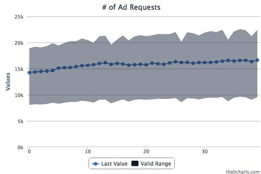
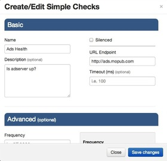

It's made of two things:
when checks fail ...alert!
via email or pagerduty
with graphs! 
then edit your checks right on the WebUI!
but we haven't even
told you the
most powerful feature
You can create any type of check that you want!
it's in the source*
* inherit the ServiceCheck django modelWe've already implemented 6 types of checks and they were easy!
But we need help!
because when it comes to monitoring, we're in this together
And we want to make this the best monitoring project out there
and feel free to msg me